8.1 Explicación
En este módulo vamos a ver cómo analizar la relación entre dos variables. Primero, veremos los conceptos de covarianza y correlación, y luego avanzaremos hasta el modelo lineal.
knitr::opts_chunk$set(warning = FALSE, message = FALSE)
library(tidyverse)
library(modelr)
library(GGally)
library(plot3D)8.1.1 Covarianza y Correlación.
La covarianza mide cómo varían de forma conjunta dos variables, en promedio. Se define como:
\[ \text{cov}(x,y)=\frac{1}{n}\sum_{i=1}^n(x_i-\bar x)(y_i-\bar y) \]
Esto es: La covarianza entre dos variables, \(x\) e \(y\) es el promedio (noten que hay una sumatoria y un dividido n) de las diferencias de los puntos a sus medias en \(x\) e \(y\).
tratemos de entender el trabalenguas con la ayuda del siguiente gráfico:
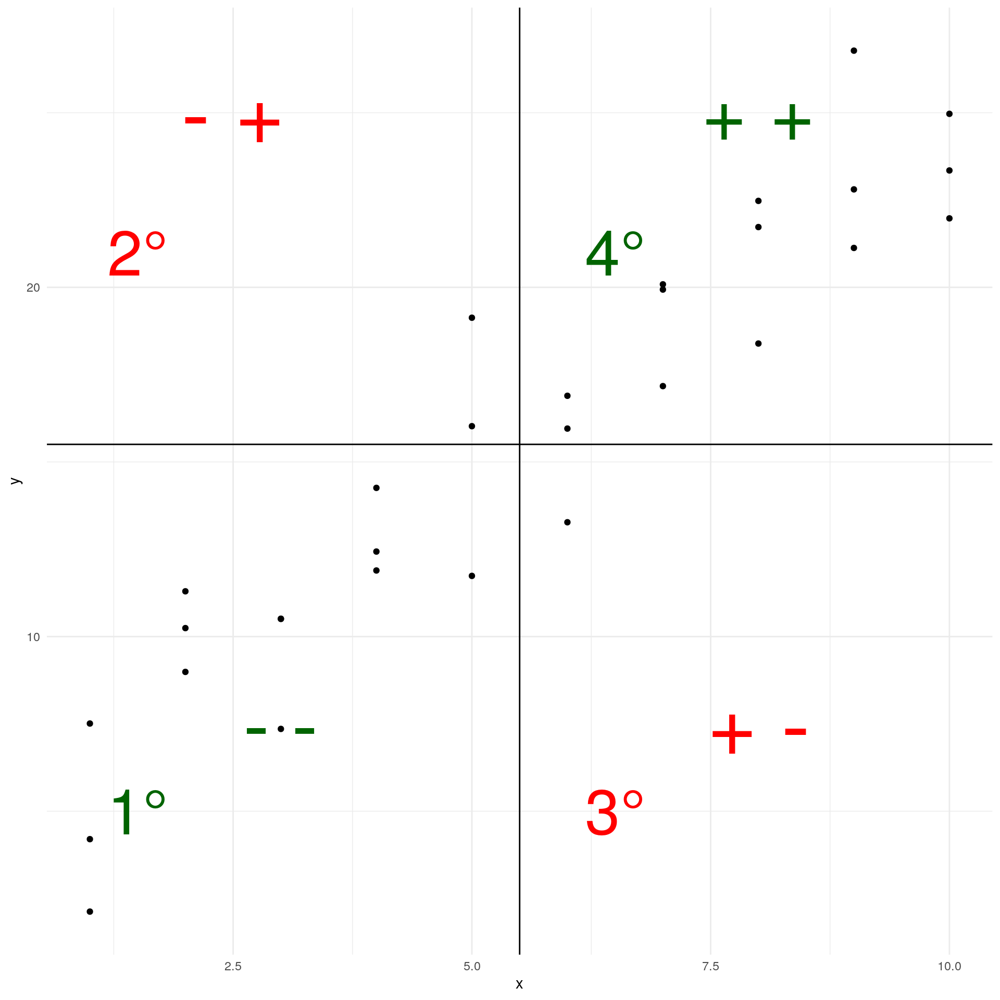
Aquí marcamos \(\bar x\) y \(\bar y\) y dividimos el gráfico en cuatro cuadrantes.
- En el primer cuadrante los puntos son más chicos a sus medias en \(x\) y en \(y\), \((x-\hat x)\) es negativo y \((y-\hat y)\) también. Por lo tanto, su producto es positivo.
- En el segundo cuadrante la diferencia es negativa en x, pero positiva en y. Por lo tanto el producto es negativo.
- En el tercer cuadrante la diferencia es negativa en y, pero positiva en x. Por lo tanto el producto es negativo.
- Finalmente, en el cuarto cuadrante las diferencias son positivas tanto en x como en y, y por lo tanto también el producto.
- Si la covarianza es positiva y grande, entonces valores chicos en una de las variables suceden en conjunto con valores chicos en la otra,y viceversa.
- Al contrario, si la covarianza es negativa y grande, entonces valores altos de una variable suceden en conjunto con valores pequeños de la otra y viceversa.
La correlación se define como sigue:
\[\rho_{x,y}=\frac{cov(x,y)}{\sigma_x \sigma_y}\]
Es decir, normalizamos la covarianza por el desvío en \(x\) y en \(y\). de esta forma, la correlación se define entre -1 y 1.
8.1.1.1 ggpairs
Para ver una implementación práctica de estos conceptos, vamos a utilizar la librería GGally para graficar la correlación por pares de variables.
- Con
ggpairs(), podemos graficar todas las variables, y buscar las correlaciones. Coloreamos por:
-\(am\): Tipo de transmisión: automático (am=0) o manual (am=1)
mtcars %>%
select(-carb,-vs) %>%
mutate(cyl = factor(cyl),
am = factor(am)) %>%
ggpairs(.,
title = "Matriz de correlaciones",
mapping = aes(colour= am))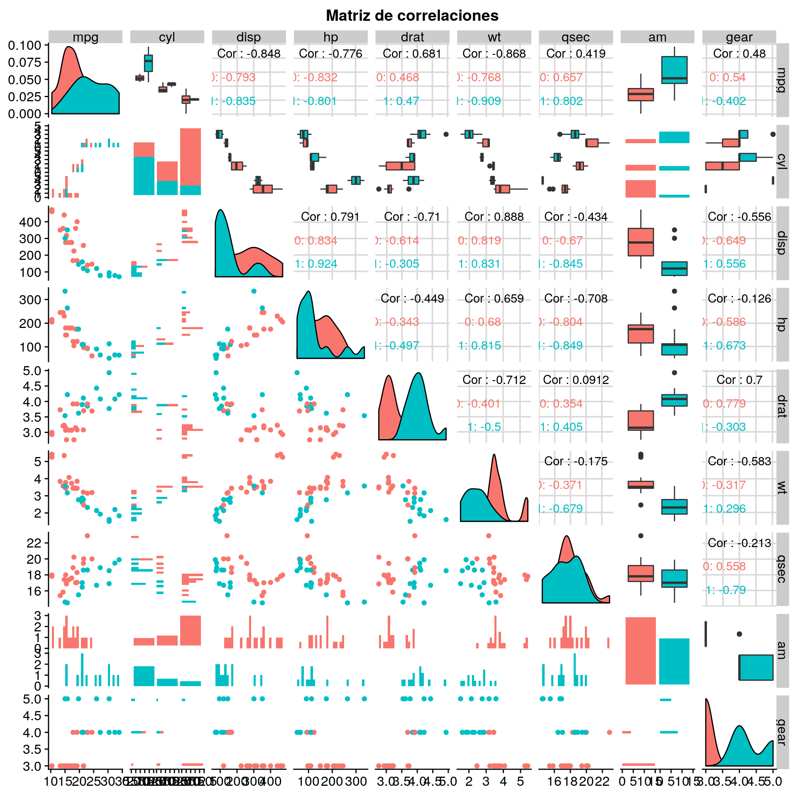
Veamos la correlación entre:
- \(mpg\): Miles/(US) gallon. Eficiencia de combustible
- \(hp\): Gross horsepower: Potencia del motor
cor(mtcars$mpg, mtcars$hp)## [1] -0.7761684nos da negativa y alta.
- Si quisiéramos testear la significatividad de este estimador, podemos realizar un test:
\(H_0\) : ρ =0
\(H_1\) : ρ \(\neq\) 0
cor.test(mtcars$mpg,mtcars$hp)##
## Pearson's product-moment correlation
##
## data: mtcars$mpg and mtcars$hp
## t = -6.7424, df = 30, p-value = 1.788e-07
## alternative hypothesis: true correlation is not equal to 0
## 95 percent confidence interval:
## -0.8852686 -0.5860994
## sample estimates:
## cor
## -0.7761684Con este p-value rechazamos \(H_0\)
8.1.2 Modelo Lineal
sigamos utilizando los datos de sim1
ggplot(sim1, aes(x, y)) +
geom_point()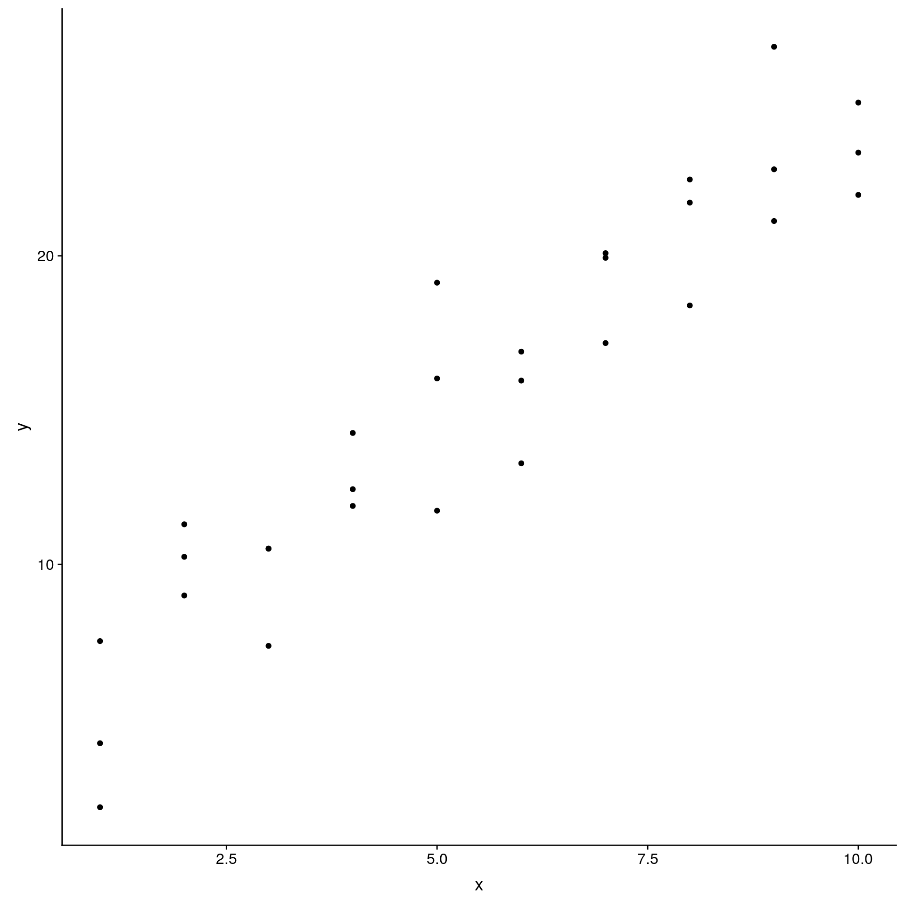
Se puede ver un patrón fuerte en los datos. Pareciera que el modelo lineal y = a_0 + a_1 * x podría servir.
8.1.2.1 Modelos al azar
Para empezar, generemos aleatoriamente varios modelos lineales para ver qué pinta tienen. Para eso, podemos usar geom_abline () que toma una pendiente e intercepto como parámetros.
models <- tibble(
a1 = runif(250, -20, 40),
a2 = runif(250, -5, 5)
)
ggplot(sim1, aes(x, y)) +
geom_abline(aes(intercept = a1, slope = a2), data = models, alpha = 1/4) +
geom_point() 
A simple vista podemos apreciar que algunos modelos son mejores que otros. Pero necesitamos una forma de cuantificar cuales son los mejores modelos.
8.1.2.2 distancias
Una forma de definir mejor es pensar en aquel modelo que minimiza la distancia vertical con cada punto:
Para eso, eligamos un modelo cualquiera:
\[ y= 7 + 1.5*x\]
(para que se vean mejor las distancias, corremos un poquito cada punto sobre el eje x)
dist1 <- sim1 %>%
mutate(
dodge = rep(c(-1, 0, 1) / 20, 10),
x1 = x + dodge,
pred = 7 + x1 * 1.5
)
ggplot(dist1, aes(x1, y)) +
geom_abline(intercept = 7, slope = 1.5, colour = "grey40") +
geom_point(colour = "grey40") +
geom_linerange(aes(ymin = y, ymax = pred), colour = "#3366FF") 
La distancia de cada punto a la recta es la diferencia entre lo que predice nuestro modelo y el valor real
Para computar la distancia, primero necesitamos una función que represente a nuestro modelo:
Para eso, vamos a crear una función que reciba un vector con los parámetros del modelo, y el set de datos, y genere la predicción:
model1 <- function(a, data) {
a[1] + data$x * a[2]
}
model1(c(7, 1.5), sim1)## [1] 8.5 8.5 8.5 10.0 10.0 10.0 11.5 11.5 11.5 13.0 13.0 13.0 14.5 14.5
## [15] 14.5 16.0 16.0 16.0 17.5 17.5 17.5 19.0 19.0 19.0 20.5 20.5 20.5 22.0
## [29] 22.0 22.0Ahora, necesitamos una forma de calcular los residuos y agruparlos. Esto lo vamos a hacer con el error cuadrático medio
\[ECM = \sqrt\frac{\sum_i^n{(\hat{y_i} - y_i)^2}}{n}\]
measure_distance <- function(mod, data) {
diff <- data$y - model1(mod, data)
sqrt(mean(diff ^ 2))
}
measure_distance(c(7, 1.5), sim1)## [1] 2.6652128.1.2.3 Evaluando los modelos aleatorios
Ahora podemos calcular el ECM para todos los modelos del dataframe models. Para eso utilizamos el paquete purrr, para ejecutar varias veces la misma función sobre varios elementos.
Tenemos que pasar los valores de a1 y a2 (dos parámetros –> map2), pero como nuestra función toma sólo uno (el vector a), nos armamos una función de ayuda para wrapear a1 y a2
sim1_dist <- function(a1, a2) {
measure_distance(c(a1, a2), sim1)
}
models <- models %>%
mutate(dist = purrr::map2_dbl(a1, a2, sim1_dist))
models## # A tibble: 250 x 3
## a1 a2 dist
## <dbl> <dbl> <dbl>
## 1 -14.0 4.46 8.75
## 2 5.28 -1.89 23.6
## 3 19.5 0.991 10.1
## 4 -2.28 3.90 6.80
## 5 -7.64 1.07 17.6
## 6 -19.9 -0.594 39.4
## 7 -13.5 0.601 26.2
## 8 -7.11 4.39 7.23
## 9 -13.1 3.35 11.1
## 10 21.2 -2.13 13.6
## # … with 240 more rowsA continuación, superpongamos los 10 mejores modelos a los datos. Coloreamos los modelos por -dist: esta es una manera fácil de asegurarse de que los mejores modelos (es decir, los que tienen la menor distancia) obtengan los colores más brillantes.
ggplot(sim1, aes(x, y)) +
geom_point(size = 2, colour = "grey30") +
geom_abline(
aes(intercept = a1, slope = a2, colour = -dist),
data = filter(models, rank(dist) <= 10)
)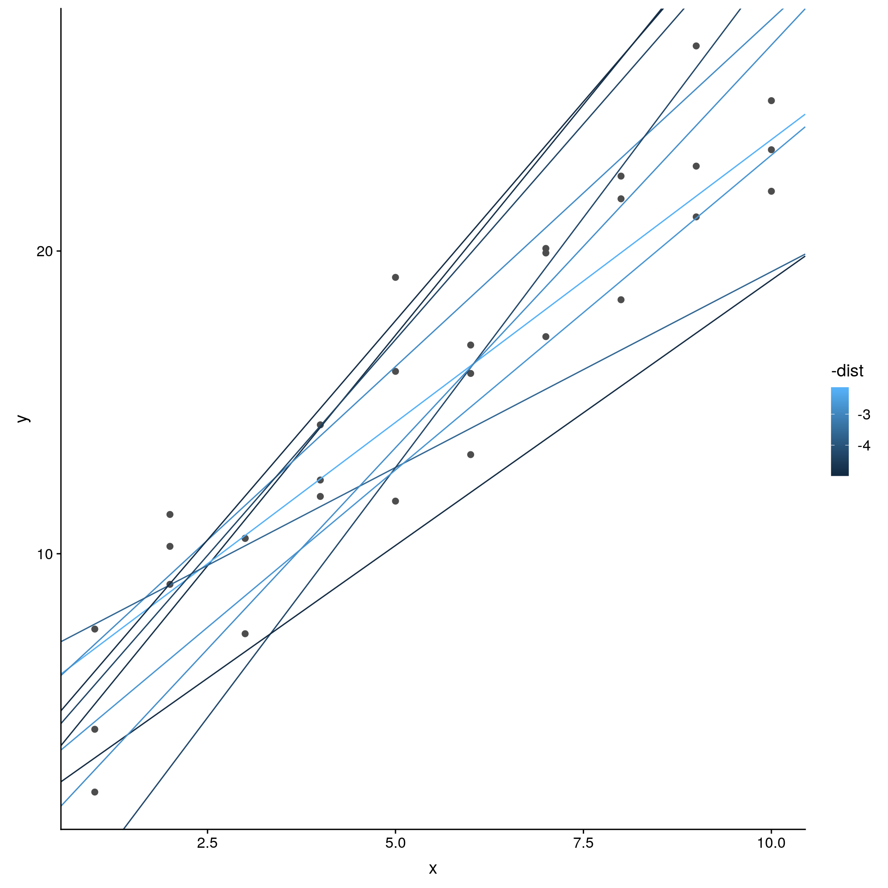
También podemos pensar en estos modelos como observaciones y visualizar con un gráfico de dispersión de a1 vsa2, nuevamente coloreado por -dist. Ya no podemos ver directamente cómo se compara el modelo con los datos, pero podemos ver muchos modelos a la vez. Nuevamente, destacamos los 10 mejores modelos, esta vez dibujando círculos rojos debajo de ellos.
ggplot(models, aes(a1, a2)) +
geom_point(data = filter(models, rank(dist) <= 10), size = 4, colour = "red") +
geom_point(aes(colour = -dist))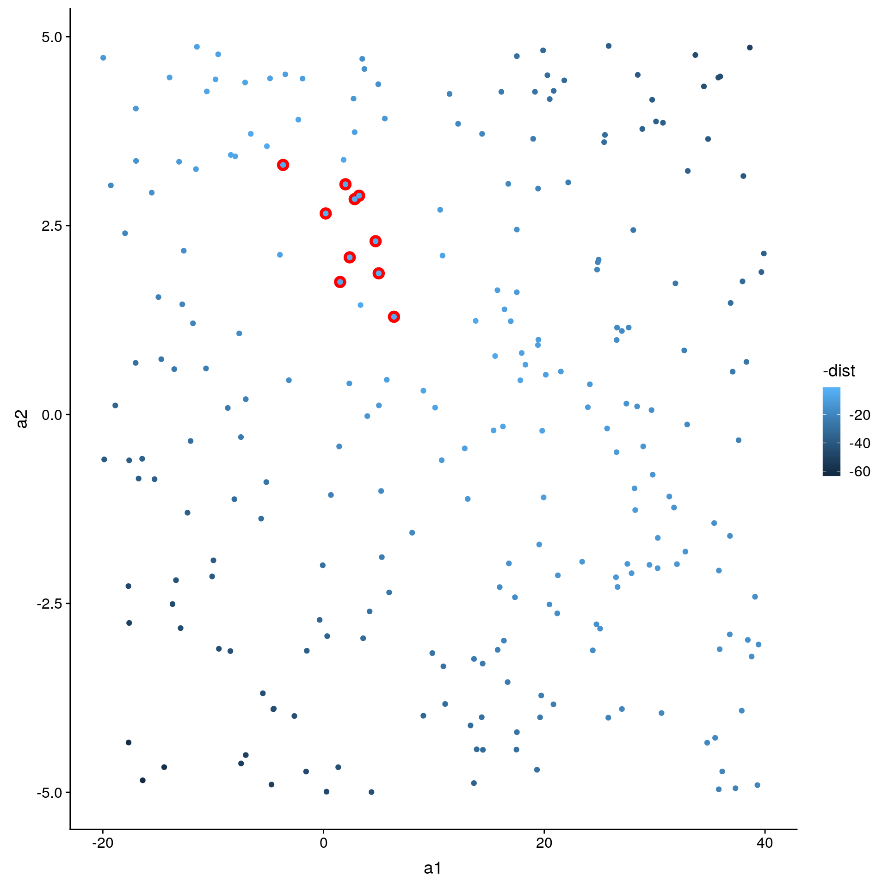
8.1.2.4 Grid search
En lugar de probar muchos modelos aleatorios, podríamos ser más sistemáticos y generar una cuadrícula de puntos uniformemente espaciada (esto se denomina grid search). Elegimos los parámetros de la grilla aproximadamente mirando dónde estaban los mejores modelos en el gráfico anterior.
grid <- expand.grid(
a1 = seq(-5, 20, length = 25),
a2 = seq(1, 3, length = 25)
) %>%
mutate(dist = purrr::map2_dbl(a1, a2, sim1_dist))
grid %>%
ggplot(aes(a1, a2)) +
geom_point(data = filter(grid, rank(dist) <= 10), size = 4, colour = "red") +
geom_point(aes(colour = -dist)) 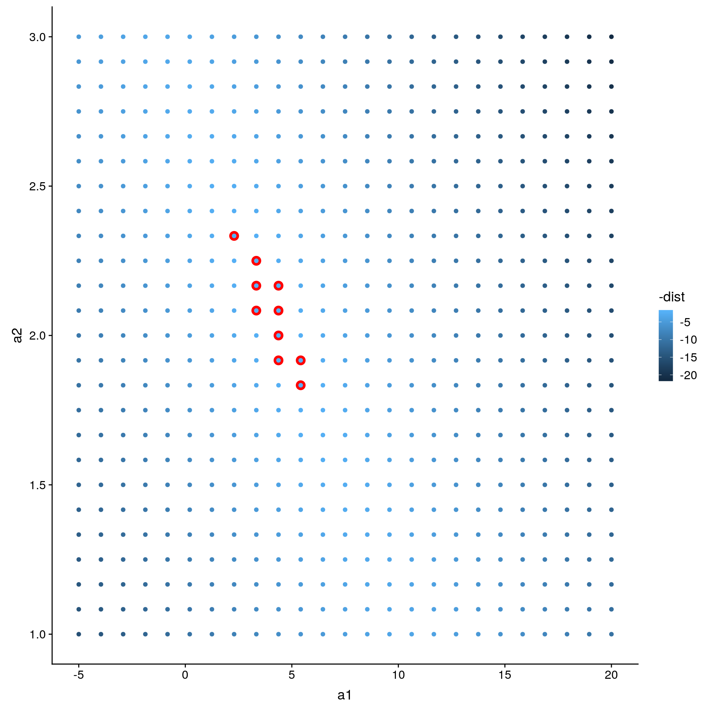
Cuando superponemos los 10 mejores modelos en los datos originales, todos se ven bastante bien:
ggplot(sim1, aes(x, y)) +
geom_point(size = 2, colour = "grey30") +
geom_abline(
aes(intercept = a1, slope = a2, colour = -dist),
data = filter(grid, rank(dist) <= 10)
)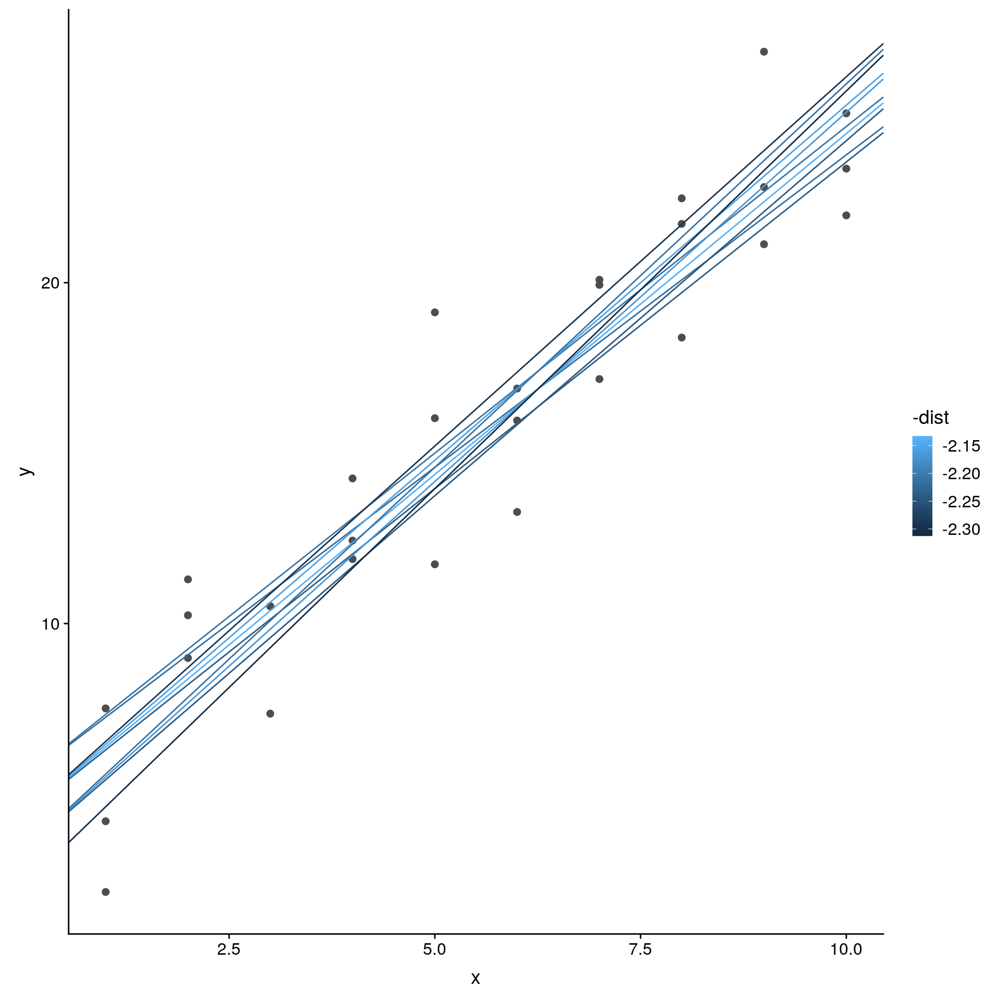
8.1.2.5 óptimo por métodos numéricos
Podríamos imaginar este proceso iterativamente haciendo la cuadrícula más fina y más fina hasta que nos centramos en el mejor modelo. Pero hay una forma mejor de abordar ese problema: una herramienta de minimización numérica llamada búsqueda de Newton-Raphson.
La intuición de Newton-Raphson es bastante simple: Se elige un punto de partida y se busca la pendiente más inclinada. Luego, desciende por esa pendiente un poco, y se repite una y otra vez, hasta que no se puede seguir bajando.
En R, podemos hacer eso con optim ():
- necesitamos pasarle un vector de puntos iniciales. Elegimos 4 y 2, porque los mejores modelos andan cerca de esos valores
- le pasamos nuestra función de distancia, y los parámetros que nuestra función necesita (data)
best <- optim(c(4,2), measure_distance, data = sim1)
best## $par
## [1] 4.221029 2.051528
##
## $value
## [1] 2.128181
##
## $counts
## function gradient
## 49 NA
##
## $convergence
## [1] 0
##
## $message
## NULLggplot(sim1, aes(x, y)) +
geom_point(size = 2, colour = "grey30") +
geom_abline(intercept = best$par[1], slope = best$par[2])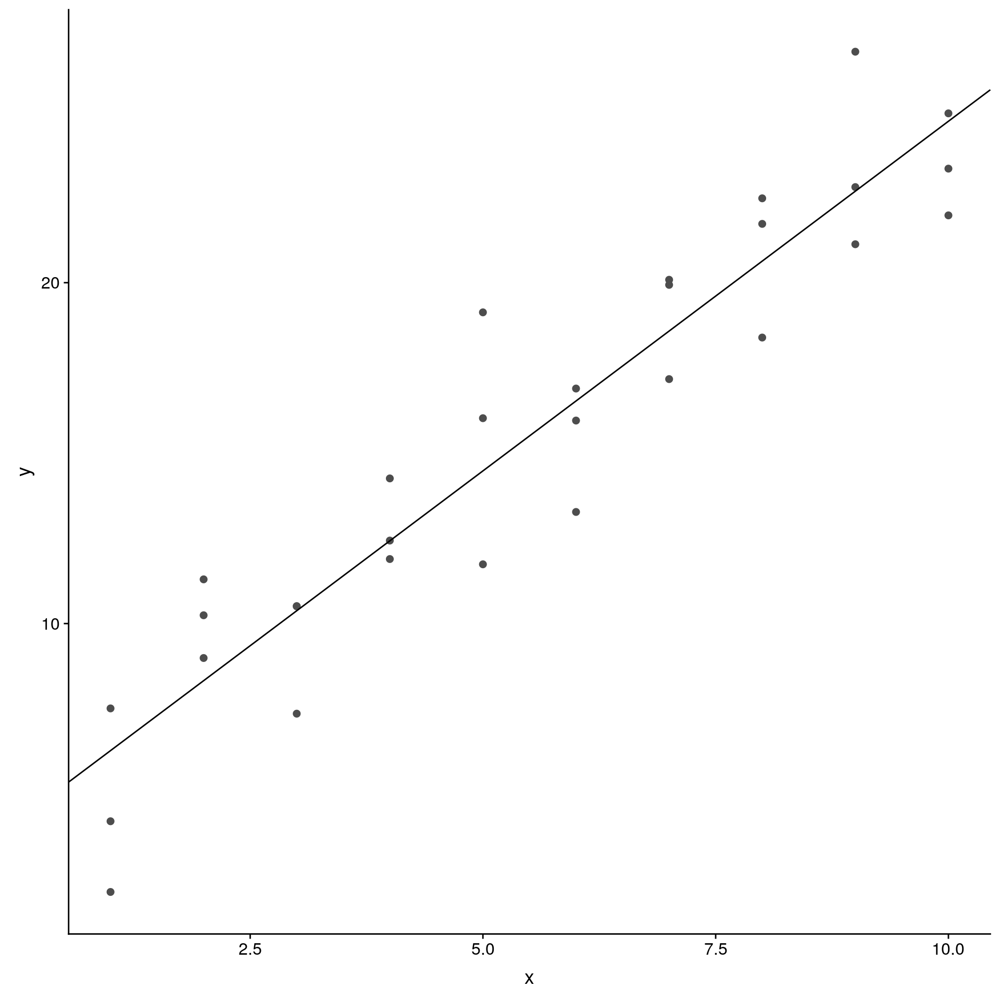
8.1.2.6 Óptimo para el modelo lineal
Este procedimiento es válido para muchas familias de modelos. Pero para el caso del modelo lineal, conocemos otras formas de resolverlo
Si nuestro modelo es
\[ y = a_1 + a_2x + \epsilon \]
La solución del óptima que surge de minimizar el Error Cuadrático Medio es:
\[ \hat{a_1} = \bar{y} - \hat{a_2}\bar{x} \]
\[ \hat{a_2} = \frac{\sum_i^n (y_i -\bar{y})(x_i -\bar{x})}{\sum_i^n (x_i- \bar{x})} \]
R tiene una función específica para el modelo lineal lm(). Cómo esta función sirve tanto para regresiones lineales simples como múltiples, debemos especificar el modelo en las formulas: y ~ x
sim1_mod <- lm(y ~ x, data = sim1)8.1.2.7 Interpretando la salida de la regresión
summary(sim1_mod)##
## Call:
## lm(formula = y ~ x, data = sim1)
##
## Residuals:
## Min 1Q Median 3Q Max
## -4.1469 -1.5197 0.1331 1.4670 4.6516
##
## Coefficients:
## Estimate Std. Error t value Pr(>|t|)
## (Intercept) 4.2208 0.8688 4.858 4.09e-05 ***
## x 2.0515 0.1400 14.651 1.17e-14 ***
## ---
## Signif. codes: 0 '***' 0.001 '**' 0.01 '*' 0.05 '.' 0.1 ' ' 1
##
## Residual standard error: 2.203 on 28 degrees of freedom
## Multiple R-squared: 0.8846, Adjusted R-squared: 0.8805
## F-statistic: 214.7 on 1 and 28 DF, p-value: 1.173e-14Analicemos los elementos de la salida:
- Residuals: La distribución de los residuos. Hablaremos más adelante.
- Coefficients: Los coeficientes del modelo. El intercepto y la variable explicativa
- Estimate: Es el valor estimado para cada parámetro
- Pr(>|t|): Es el p-valor asociado al test que mide que el parámetro sea mayor que 0. Si el p-valor es cercano a 0, entonces el parámetro es significativamente mayor a 0.
- Multiple R-squared: El \(R^2\) indica que proporción del movimiento en \(y\) es explicado por \(x\).
- F-statistic: Es el resultado de un test de significatividad global del modelo. Con un p-valor bajo, rechazamos la hipótesis nula, que indica que el modelo no explicaría bien al fenómeno.
interpretación de los parámetros: El valor estimado del parámetro se puede leer como “cuanto varía \(y\) cuando \(x\) varía en una unidad”. Es decir, es la pendiente de la recta
8.1.2.8 Análisis de los residuos
Los residuos del modelo indican cuanto le erra el modelo en cada una de las observaciones. Es la distancia que intentamos minimizar de forma agregada.
Podemos agregar los residuos al dataframe con add_residuals () de la librería modelr.
sim1 <- sim1 %>%
add_residuals(sim1_mod)
sim1 %>%
sample_n(10)## # A tibble: 10 x 3
## x y resid
## <int> <dbl> <dbl>
## 1 1 2.13 -4.15
## 2 5 16.0 1.55
## 3 6 16.0 -0.574
## 4 7 20.1 1.50
## 5 3 7.36 -3.02
## 6 4 14.3 1.83
## 7 5 19.1 4.65
## 8 5 11.7 -2.74
## 9 7 19.9 1.35
## 10 2 8.99 0.665- Si cuando miramos los residuos notamos que tienen una estructura, eso significa que nuestro modelo no esta bien especificado. En otros términos, nos olvidamos de un elemento importante para explicar el fenómeno.
- Lo que debemos buscar es que los residuos estén homogéneamente distribuidos en torno al 0.
Hay muchas maneras de analizar los residuos. Una es con las estadísticas de resumen que muestra el summary. Otra forma es graficándolos.
ggplot(sim1, aes(x, resid)) +
geom_ref_line(h = 0, size = 2,colour = "firebrick") +
geom_point() 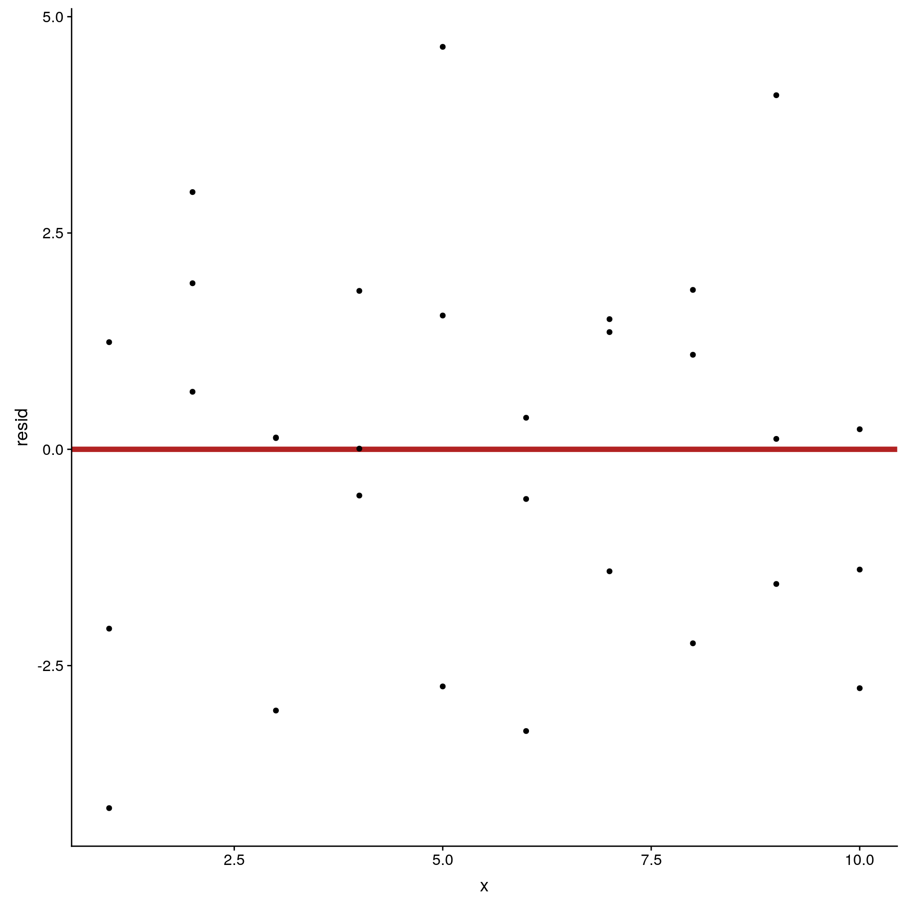
8.1.3 Regresión lineal múltiple
Si bien escapa a los alcances de esta clase ver en detalle el modelo lineal múltiple, podemos ver alguna intuición.
- Notemos que el modelo ya no es una linea en un plano, sino que ahora el modelo es un plano, en un espacio de 3 dimensiones:
Para cada par de puntos en \(x_1\) y \(x_2\) vamos a definir un valor para \(y\)
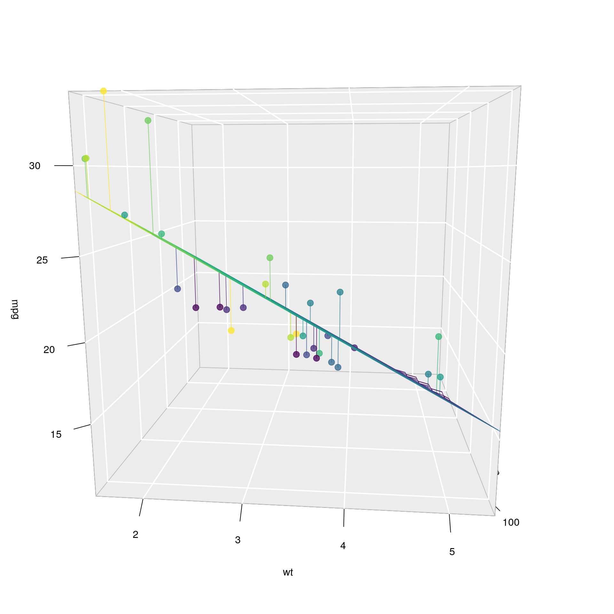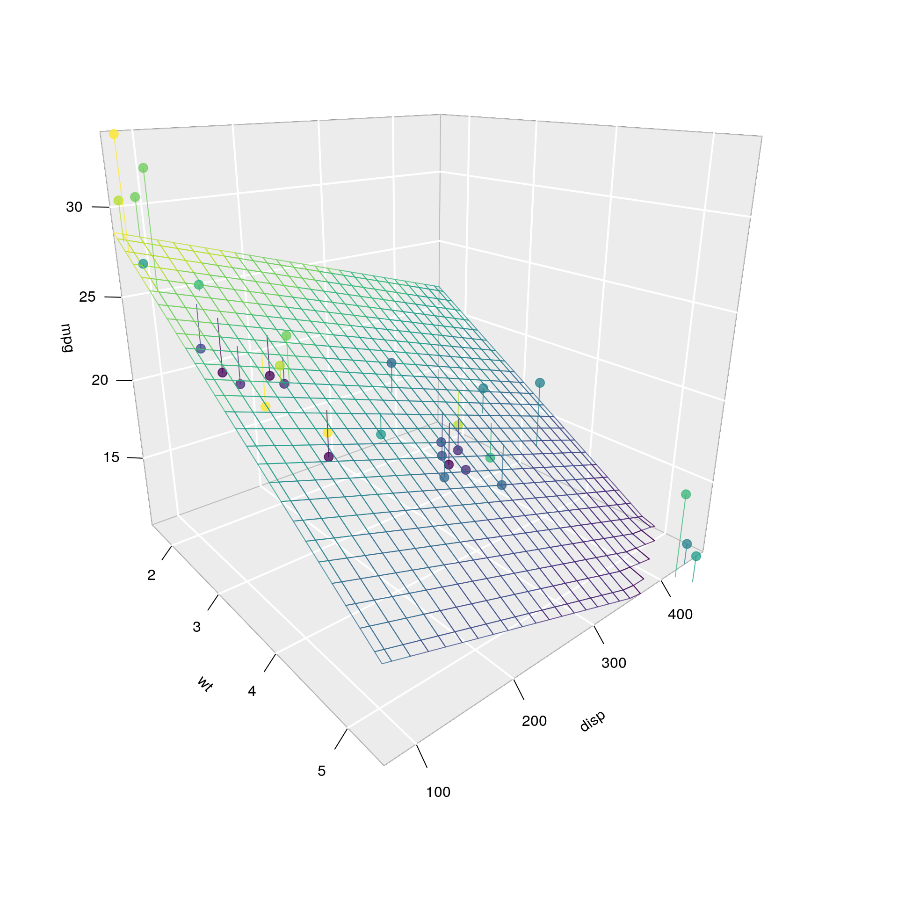
El criterio para elegir el mejor modelo va a seguir siendo minimizar las distancias verticales. Esto quiere decir, respecto de la variable que queremos predecir.
interpretación de los parámetros: El valor estimado del parámetro se puede leer como “cuanto varía \(y\) cuando \(x\) varía en una unidad, cuando todo lo demás permanece constante”. Noten que ahora para interpretar los resultados tenemos que hacer la abstracción de dejar todas las demás variables constantes
Adjusted R-squared: Es similar a \(R^2\), pero ajusta por la cantidad de variables del modelo (nosotros estamos utilizando un modelo de una sola variable), sirve para comparar entre modelos de distinta cantidad de variables.
8.1.4 Para profundizar
Estas notas de clase estan fuertemente inspiradas en los siguientes libros/notas:
Un punto pendiente de estas clases que es muy importante son los supuestos que tiene detrás el modelo lineal.